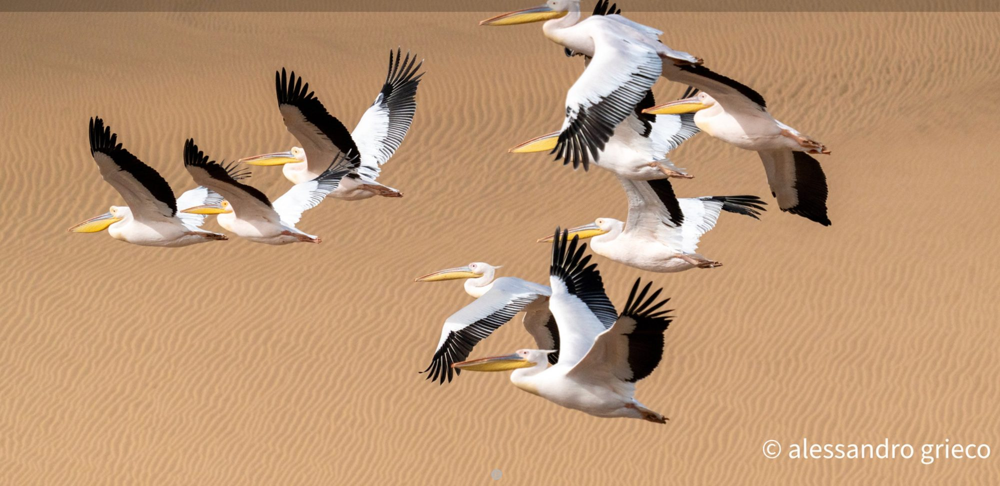

◦19°S 13°E · Namib, Namibia
Scroll
I explore and photograph wild places, and try to capture the wonder they create.
Field notes
◦Photo essaysPortfolio
◦Selected frames
About
I explore and photograph wild places, and I try to understand — and capture — the wonder they create.
The wonder for nature came first, long before the camera. I grew up in Apulia, in the south of Italy, one of the most beautiful corners I know, in a family that taught me to look closely and stay curious about the natural world. I've come to believe that kind of attention is one of the richest experiences a life can hold.
The camera came later, as a way to freeze a feeling and carry it home: the animal before it notices you, the light an hour before anyone else is awake, the quiet at the edge of a place most people only pass through. I'm drawn to the patient subjects — wildlife and travel, the places where land meets water, earth meets sky, or the world goes quiet underwater. I started as a diver, and I still go looking for the encounter in the wild: an intimate search for something pristine, more than for the postcard.
What I find out there comes with an obligation. These are places under pressure, and to photograph them is also to bear a small witness for them — for the conservation of the habitats we share, and a safer future for the species that live in them.
I have a humanistic background, and I live now in Frankfurt am Main, Germany.
◦Alessandro Grieco
Why "Prisho"
There's a word in the dialect of my region that doesn't quite translate: prisho — or priscio — pronounced ˈprɪʃo. It names a very particular feeling. A mix of happiness and energy in doing what you love. The enthusiasm and the joy together, the excitement of beginning something — or even just of looking forward to it. The butterfly in the belly that pushes you to act. The curiosity that sends you exploring, the ground where a passion takes its strength, the energy to throw yourself into something great. This whole site is about my prisho. Everything here only exists because of it.
The field dispatch
One essay a month, from somewhere quiet.
New photo essays and the occasional note from the road. No gear reviews, no noise. Unsubscribe in one click.